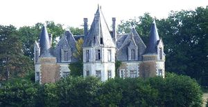
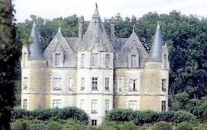
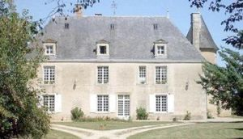
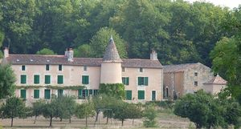
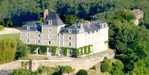
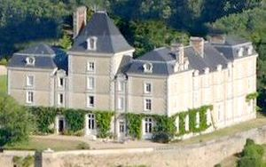
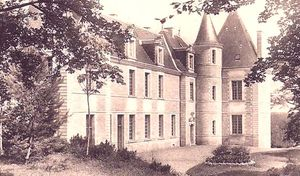

Recensement Jean-Claude Truffet
| Département | 86 — Vienne |
| Canton | Vivonne |
| Commune | Marnay |
| Type d'édifice | Château |
| Période d'origine | XIV |







Trois châteaux à Marnay le château de Gué, de la Maugue, du Bois Coursier, et de la Touche. MAUGUE, la première mention de la seigneurie date de 1447, un premier château, qui relève du château Larcher, fut acquis à la famille Taveau par un certain Jacques Jude, de la bourgeoisie poitevine des échevins ou maires de Poitiers. En 1504 Madeleine Jude, héritière, épouse Pierre de Montsorbier qui devient alors seigneur de Maugué et leur petite-fille, Renée de Montsorbier l'apportera, en 1538, à son époux, Florent de Blom, seigneur de Chambon, d'Écrouzilles et autres lieux, et restera pendant trois siècles à Maugué. Les terres dépendantes de la seigneurie de Maugué se trouvent dans les paroisses de Château-Larcher, Marnay et Vivonne. La dernière héritière, Louise Caroline de Blom, apporte le domaine à Emmanuel Hunault de La Chevalerie qu'elle épouse en 1830. Après leur mort, vers 1875, leurs héritiers vendent Maugué à la famille de Beauregard dont la présence est assez brève avant que s'installent les ancêtres des propriétaires actuels. GUE, en 1470, cet édifice appartenait à la famille Dumont, pour passer, à la fin du XVIe siècle, à la famille Aubanneau. En 1654, François Aubanneau vend le Gué à Gaspard Riguet, procureur au présidial. Sa petite fille épouse de Claude François Boynet en hérite vers 1715. Le domaine devient propriété de la famille de Cressac en 1785 et les actuels occupants en sont les descendants. le deuxième château qui date de Gaspard Riguet du XVIIe siècle construit par le vicomte de madame la marquise du Lau née Madeleine de Cressac et héritière du Gué.
BOIS-COURSIER, aux XIIe et XIVe siècle, la propriété appartenait à Barthélémy ou Jean de Boiscourcier. A la fin du XIVe siècle, la seigneurie est acquise par la famille Rivaud, seigneur d'Ayron. Ils y resteront jusqu'au milieu du XVIIe siècle malgré les changements de noms car l'héritage s'étant fait par les filles essentiellement. En 1689, Bois-Coursier est acheté par Gaspard Riguet , sa fille Antoinette-Amice, épouse en 1696 François Boynet, seigneur de la Touche. En 1785, Bois Courcier devient la propriété de la famille de Cressac qui la conservera jusqu'aux environs de 1870, date où le domaine est vendu. GUE, la façade est coupée en son centre par une tour. De chaque côté de la façade, à l'est se trouve un pigeonnier et à l'ouest une chapelle. Le second château fut édifié peu après 1850 par le volonté de madame la marquise du Lau, ce château, dit le château neuf, de dimensions modestes, mais d'allure rappelant un certain style romantique à la mode de l'époque, est situé un peu en retrait, à l'ouest de l'ancien château. TOUCHE, c'est un peu avant 1450 que la terre de la Touche fut la propriété de Jarnet Gervain. Sa nièce Ythière Gervain en hérita et l'offrit à son mari Jean Favereau. Il fit construire pour son fils Michel, le premier château de la Touche, au XVIe siècle. Le château ira en 1604 à Renée d'Elbenne, qui l'offrit à son fils, qui vécu au château et le fit réaménager. Le château de la Touche restera en bon état jusqu'à la fin du XIXe siècle puis il fut démoli et reconstruit. Le château de la Touche appartient depuis à la famille Cressac.
Maugué famille de Beauregard. Famille de Pierre de Montsorbier Bois, famille de Jean de Boiscourcier
"
à Marnay le château de Gué grav 1-2, de la Maugue grav 5-6, du Bois Coursier grav 3-4, et de la Touche grav 7. Touche 46° 23' 49" Nord, 0° 20' 36" Est